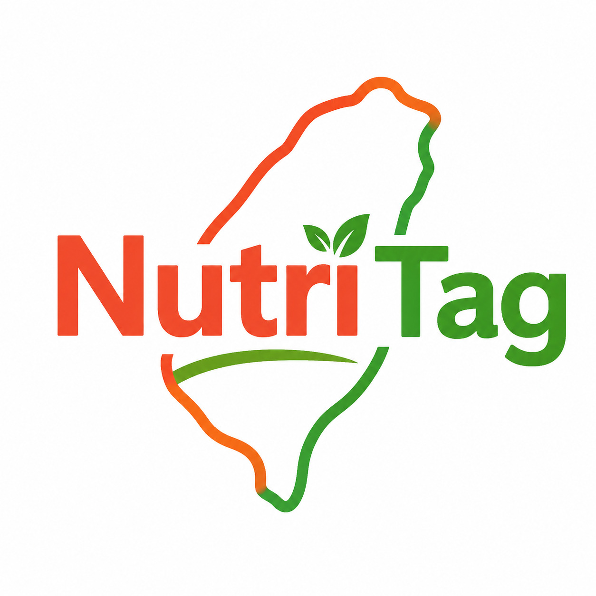
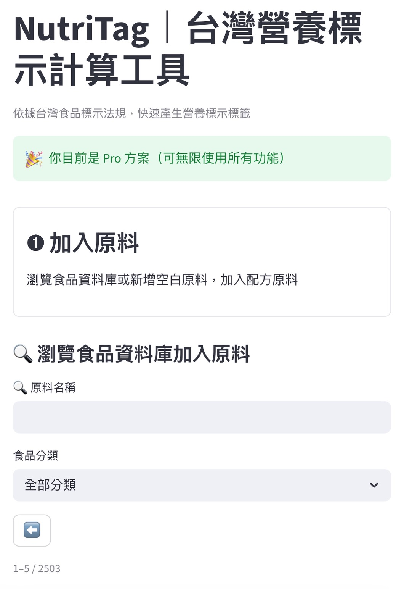
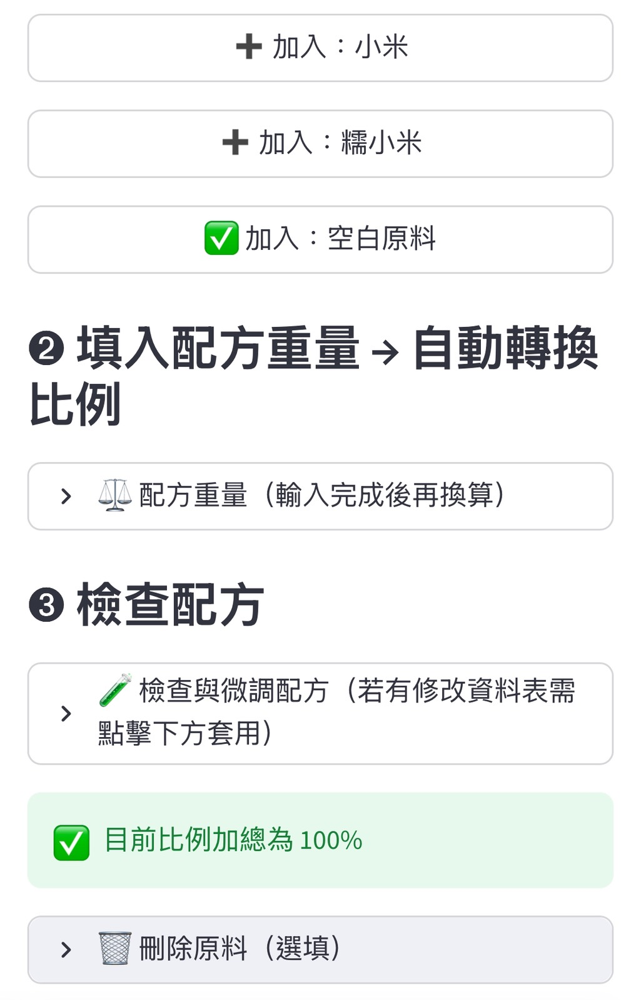
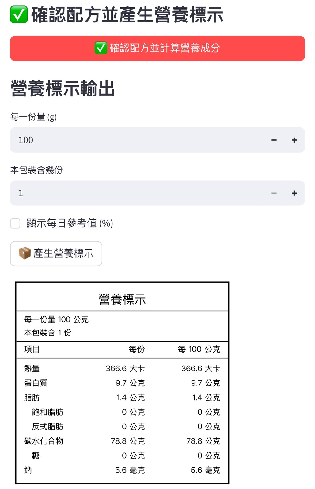

配方常改、新品一直出
這種重複計算，交給系統就好



所有資料僅屬於你的帳號，不作任何公開或分析使用。
計算邏輯、營養標示格式依實務與法規設計。
使用衛福部食品營養資料庫與標示原則。
每週測試 5–10 種配方，
用 NutriTag 即時重算營養標示，
不再為了改配方重做整張表。
包裝設計前即可產出營養標示，
與設計師、工廠溝通更順，
減少反覆修改成本。
研發階段先用 NutriTag 試算，
僅在確認配方後再送第三方檢驗，
大幅降低檢驗浪費。
每月 3 次試算，適合評估流程與準確度。
無限試算、正式營養標示、過敏原警語
適合實際包裝、上架與對外販售使用。
Pro 方案產出的營養標示依 TFDA 公告之營養標示規定與四捨五入原則設計， 實務上可直接用於包裝與設計稿。 若產品屬高風險或需上架大型通路，建議再搭配第三方檢驗確認。
台灣法規並未強制所有產品都需送檢， 多數食品業者是依配方計算產出營養標示， NutriTag 即是協助完成此實務流程。
系統使用衛福部 TFDA 公開食品營養資料庫， 並可依實際原料新增自訂數據。
只需調整配方比例，系統會即時重算營養標示， 不需重新建立整份資料。
不會，所有配方僅存在於你的帳號中， NutriTag 不做任何公開或分析使用。
不用付錢、不用綁約，直接用實際配方試算
用我的配方試算營養標示 多數食品業者都是試算過一次，就知道值不值得